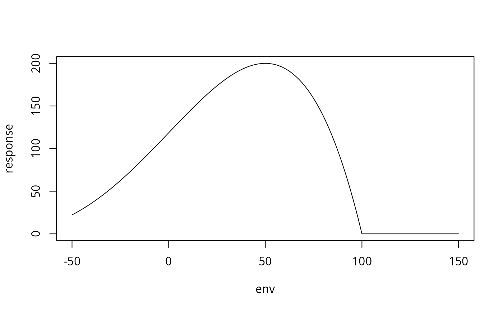

Generates species response parameters to n environmental variables following Minchin (1987).
Usage
species(
nspp = 30,
Amax,
fun,
xpar,
srange,
alpha = 4,
gamma = 4,
ndim,
sdistr,
ocor,
odistr
)Arguments
- nspp
Number of species to be generated.
- Amax
Maximum abundance of a species.
Amaxcurrently allows three options: i) a function how to generate maximum abundances (e.g.runif,rgamma) ii) a vector of lengthnsppiii) a single number that is used as maximum abundance for all the species.- fun
Function to generate species optima (e.g.
rnorm,runif). The two parameters inxparare passed to functionfun. If omitted species optima are generated at regular intervals between the two values inxpar.- xpar
Two numbers describing a distribution e.g mu and sigma for a normal distribution, lower and upper bound for a random uniform distribution.
- srange
Length of the ecological gradient to which individual species respond. Either one number or a matrix with
nspprows andndimcolumns. Ifsrangeshould be different for different environmental variables a simpler solution is to change argumenteleninmake.envaccordingly. E.g.elen = c(100,50,50)when using three environmental gradients.- alpha
Shape parameter of the beta distribution. One number or a matrix with
nspprows andndimcolumns.- gamma
Shape parameter of the beta distribution. One number or a matrix with
nspprows andndimcolumns.- ndim
Number of environmental variables to which generated species should respond.
- sdistr
Users may supply own distributions of species optima. Matrix with
nspprows andndimcolumns (as well in the special case ofndim = 1).- ocor
Correlation matrix of the species optima. May be generated by code cor.mat.fun.
- odistr
Distribution of the correlated optima either 'uniform' or 'Gaussian'
Value
List with ndim elements. Each list contains the species response
parameters to one environmental gradient.
Details
Details on the exact generation of species response functions from parameters
Amax, m, r, gamma and alpha are given in Minchin (1987).
Species response curves are determined by five parameters:
a parameter determining the maximum abundance (Amax)
and one describing the location (m) of this mode.
A parameter determining to which environmental range the species respond
(srange in the input r in the output) and two parameters
(alpha, gamma) describing the shape of the species response function.
If alpha = gamma the response curve is symmetric
(alpha = gamma = 4, yields approximately Gaussian distributions).
Additionally, species optima for several environmental variables may be
correlated.
Currently this is only possible for Gaussian or uniform distributions of
species optima. Users may as well supply previously generated optima
(e.g. optima similar to a real dataset).
References
Minchin, P.R. (1987) Multidimensional Community Patterns: Towards a Comprehensive Model. Vegetatio, 71, 145-156. doi:10.1007/BF00039167
Examples
spec.par <- species(
nspp = 30, Amax = runif, srange = 200, fun = runif,
xpar = c(-50, 150),
ndim = 5, alpha = 4, gamma = 4
)
spec.par <- species(
nspp = 30, ndim = 3, Amax = runif, xpar = c(-50, 150),
srange = 200, alpha = 4, gamma = 4
)
# example where srange, alpha and gamma are different for each
# species and environmental gradient.
spec.par <- species(
nspp = 30, ndim = 3, Amax = runif, xpar = c(-50, 150),
srange = matrix(ncol = 3, runif(90, 100, 200)),
alpha = matrix(ncol = 3, runif(90, 1, 5)),
gamma = matrix(ncol = 3, runif(90, 1, 5))
)
# example where species optima are correlated
correlations <- list(c(1, 2, 0.5), c(1, 3, 0.3), c(2, 3, 0.1))
spec.cor.mat <- cor.mat.fun(3, correlations)
spec.par <- species(
nspp = 30, ndim = 3, Amax = runif, xpar = c(50, 50),
srange = 200, alpha = 4, gamma = 4,
ocor = spec.cor.mat, odistr = "Gaussian"
)
# example for species response curves (users should alter alpha and gamma)
spec.par <- species(
nspp = 1, Amax = 200, srange = 200, fun = runif,
xpar = c(50, 50),
ndim = 1, alpha = 3, gamma = 1
)
env <- -50:150
response <- palaeoSig:::make.abundances(
env = -50:150,
param = spec.par[[1]]$spp
)
plot(env, response, type = "l")
